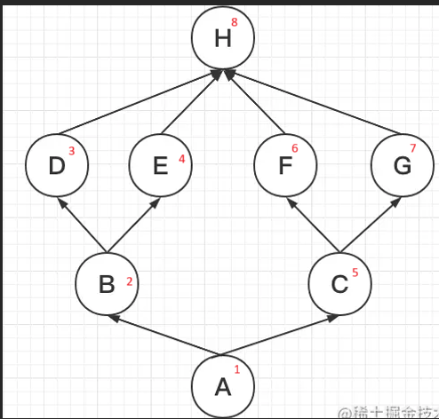
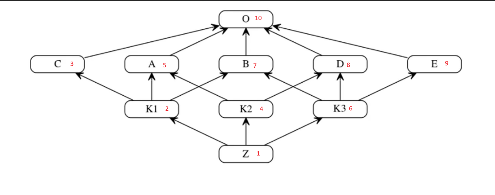

Класи
📚 Корисні ресурси
- Офіційна документація Python 3.7: Classes
- First Look at Classes (офіційно)
- TutorialsPoint — Python Classes & Objects
🔑 Терміни
- Клас — це шаблон або креслення для створення об’єктів. Він описує, які властивості (атрибути) та поведінку (методи) матимуть об’єкти (екземпляри) цього класу.
-
Об'єкт - екземпляр класу
-
self — це перший параметр усіх методів екземпляра класу в Python. Через нього метод має доступ до атрибутів і методів конкретного об’єкта.Хоча слово self — не зарезервоване (можна назвати як завгодно), це прийнятий стандарт Python, і його завжди потрібно писати першим аргументом у методах об'єкта.
-
класові змінні (class variables) або атрибути класу
- Зберігаються на рівні класу.
- Спільні для всіх екземплярів класу.
- Якщо змінити їх через клас — зміни побачать усі екземпляри.
- Оголошуються всередині класу, але поза методами.
class Dog:
species = "Canis lupus" # класова змінна
def __init__(self, name):
self.name = name # атрибут екземпляра
d1 = Dog("Rex")
d2 = Dog("Buddy")
print(d1.species) # Canis lupus
print(d2.species) # Canis lupus
Dog.species = "Canis familiaris"
print(d1.species) # Canis familiaris
print(d2.species) # Canis familiaris
- атрибути екземпляра (instance attributes)
- Створюються в методі init або динамічно.
- Унікальні для кожного об’єкта (екземпляру класу).
- Зберігаються в словнику dict кожного об'єкта.
class Dog:
def __init__(self, name):
self.name = name # атрибут екземпляра
d1 = Dog("Rex")
d2 = Dog("Buddy")
print(d1.name) # Rex
print(d2.name) # Buddy
- Метод — це функція, яка належить до класу і працює з його об'єктами (екземплярами) або з самим класом. Розрізняють:
- Звичайний метод (instance method)
- Працює з конкретним об'єктом
- в якості параметра отримує self
- Метод класу (class method)
- Працює з самим класом
- в якості параметра отримує cls
- Статичний метод (static method)
- Просто утилітна функція в класі
- Звичайний метод (instance method)
Звичайний метод (instance method)
class Person:
def __init__(self, name):
self.name = name
def say_hello(self): # звичайний метод
print(f"Привіт, я {self.name}")
p = Person("Олена")
p.say_hello() # Привіт, я Олена
Метод класу (class method)
class Cat:
species = "Кіт"
@classmethod
def get_species(cls):
print(f"Всі належать до: {cls.species}")
Cat.get_species() # Всі належать до: Кіт
Статичний метод (static method)
class Math:
@staticmethod
def add(a, b):
return a + b
print(Math.add(3, 5)) # 8
Абстрактний метод — це метод, який оголошений у базовому класі, але не має реалізації. Він вимагає, щоб усі підкласи обов’язково реалізували його.
🧱 Створення класу
class TestClass():
counter = 0 #змінна(атрибут) класу
def __init__(self, name, surname): # магічний метод-ініціалізатор, про магічні методи інформація нижче
self.name = name #атрибут екземпляру класу, унікальний для кожного
self.surname = surname
🧱 Створення екземпляру класу
test_obj_1 = TestClass('Ihor', 'Petrenko')
test_obj_2 = TestClass('Solomia', 'Drizd')
#виклик атрибутів екземплярів (окремих об'єктів)
print(test_obj_1.name)
#Виведе Ihor
print(test_obj_2.name)
#Виведе Solomia
Створення кастомного методу класу
- якщо ми плануємо в кастомному методі працювати з атрибутами екземпляру, то першим параметром методу вказується self
class TestClass():
counter = 0 #змінна(атрибут) класу
def __init__(self, name, surname):
self.name = name #атрибут екземпляру класу, унікальний для кожного
self.surname = surname
def do_something(self): #кастомний метод
print(f'Name: {self.name}')
print(f'Surname: {self.surname}')
✏️ Зміна атрибутів
class Person:
def __init__(self, name):
self.name = name
def greet(self): # метод
print(f"Hello, {self.name}!")
p = Person("Alice")
p.greet() # Hello, Alice!
p.age = 30 # Додаємо новий атрибут
p.name = "Bob" # Змінюємо існуючий
del p.age # Видаляємо атрибут
Наслідування
Типи наслідування:
- Однорівненве (Single) - [Parent ← Child] - Клас доповнює або змінює єдиного батька
- Багаторівневе (Multilevel) [Grandparent ← Parent ←Child] Кілька рівнів спадкоємності
- Ієрархічне (Hierarchical) - [Parent ← {Child1, Child2}] - Багато дочірніх класів з однаковою базовою поведінкою
- Множинне (Multiple) - [{Base1, Base2} → Sub] - Об’єднання функцій кількох незалежних батьків
- Гібридне (Hybrid) - Змішана Комбінація multilevel, multiple, hierarchical за потребою
class Animal:
def speak(self):
print("Some sound")
class Dog(Animal):
def speak(self):
print("Bark!")
d = Dog()
d.speak() # Bark!
- якщо ми не будемо перевизначати логіку метода-ініціалізатора, то нічого не дописуємо в класу нащадкові
- якщо ми плануємо переписувати метод-ініціалізатор (наприклад, для того щоб передавати додаткові аргументи при ініціалізації екземпляру), треба вказувати в новому методі вираз super().__init()__ ЯЯкщо його не застосувати то не буде виконано логіки методу-ініціалізатору батьківського-класу
class Animal:
def __init__(self, type):
self.type = type
def speak(self):
print("Some sound")
class Dog(Animal):
def __init__(self, type, sub_type):
super().init(type)
self.sub_type = sub_type
def speak(self):
print("Bark!")
d = Dog("савець", 'canis lupus')
print(d.type)
print(d.sub_type)
d.speak() # Bark!
MRO
C3 Linearization

class H:
pass
class D(H):
pass
class E(H):
pass
class F(H):
pass
class G(H):
pass
class B(D, E):
pass
class C(F, G):
pass
class A(B, C):
pass
def show_mro(cls_name):
return [c.__name__ for c in cls_name.mro()]
print(*show_mro(A), sep = ' -> ')
# ВИВОДИТЬ
A -> B -> D -> E -> C -> F -> G -> H -> object

class O:
pass
class C(O):
pass
class A(O):
pass
class B(O):
pass
class D(O):
pass
class E(O):
pass
class K1(C, A, B):
pass
class K2(A, D):
pass
class K3(B, D, E):
pass
class Z(K1, K2, K3):
pass
def show_mro(cls_name):
return [c.__name__ for c in cls_name.mro()]
print(*show_mro(Z), sep = ' -> ')
# ВИВОДИТЬ
Z -> K1 -> C -> K2 -> A -> K3 -> B -> D -> E -> O -> object
Агрегація і композиція
Приклад агрегації
class Engine:
def start(self):
print("Двигун запущено")
class Car:
def __init__(self, engine):
self.engine = engine # агрегація — об'єкт передається ззовні
def drive(self):
self.engine.start()
print("Авто їде")
# Створимо Engine окремо
engine = Engine()
# Передаємо його в Car
car = Car(engine)
car.drive()
🔍 Engine існує окремо від Car. Можемо використати один engine для кількох машин або замінити його.
Приклад композиції
class Engine:
def start(self):
print("Двигун запущено")
class Car:
def __init__(self):
self.engine = Engine() # створюється всередині Car — композиція
def drive(self):
self.engine.start()
print("Авто їде")
car = Car()
car.drive()
🔍 Engine створюється всередині Car. Якщо Car зникне — двигун більше не існує.
ПОЛІМОРФІЗМ
Поліморфізм (від грец. πολύμορφος — "багатоформність") — це концепція об'єктно-орієнтованого програмування, яка дозволяє використовувати один і той самий інтерфейс (метод, функцію, оператор) для об'єктів різних класів.
У Python поліморфізм означає, що одна й та сама операція або метод може мати різну реалізацію для різних типів об'єктів.
🔧 Приклад 1: Метод з однаковою назвою в різних класах. Duck typing приклад - "якщо щось виглядає як качка і крякає як качка — воно качка"
class Dog:
def speak(self):
return "Гав!"
class Cat:
def speak(self):
return "Мяу!"
# Поліморфізм: одна функція працює з різними типами об'єктів
def animal_sound(animal):
print(animal.speak())
dog = Dog()
cat = Cat()
animal_sound(dog) # Гав!
animal_sound(cat) # Мяу!
✅ Метод speak() викликається незалежно від типу тварини — і це приклад поліморфізму. Тут немає спільного батьківського класу, але об'єкти поводяться однаково, бо мають метод walk() — це і є duck typing.
🔁 Приклад 2: Поліморфізм через наслідування
class Animal:
def speak(self):
raise NotImplementedError("Цей метод треба перевизначити в підкласі")
class Cow(Animal):
def speak(self):
return "Мууу"
class Duck(Animal):
def speak(self):
return "Кря-кря"
animals = [Cow(), Duck()]
for animal in animals:
print(animal.speak())
✅ Кожен об'єкт реалізує свою версію методу speak(), хоча вони всі наслідуються від одного базового класу.
Поліморфізм у Python:
-
дозволяє створювати код, який працює з об'єктами різних класів однаково,
-
спрощує масштабування та підтримку коду,
-
є ключовою частиною принципів ООП разом з наслідуванням, інкапсуляцією та абстракцією.
ІНКАПСУЛЯЦІЯ
Інкапсуляція — це принцип об'єктно-орієнтованого програмування (ООП), який:
✅ Приховує внутрішню реалізацію об'єкта (дані і логіку) ✅ Дозволяє доступ до них тільки через визначений інтерфейс (методи)
Простими словами: Ми «ховаємо» внутрішні змінні та деталі реалізації, щоб інші частини програми не могли їх змінювати напряму, а тільки через методи.
🧱 У Python немає справжнього «приватного» як у Java чи C++, але… Python використовує домовленість, а не заборону:
- "name" - публічний (public) доступний ззовні
- "_name" - protected (умовно) «не чіпай без потреби»
- захищені методи (protected) доступні зі свого класу, з класу що наслідується, та з основної програми
- "__name" - приватний (private) - напряму не можна в коді поза классом звернутися до такого імені, Python змінює ім’я внутрішньо (манглінг).
- приватні методи (атрибути, імена) доступні зі свого класу, але закриті для доступу з класу що наслідується, та з основної програми. Проте до них можна добратись через нотацію _{origin Class}__method | attr - тобто "манглінг"
Name mangling
Name mangling — це механізм, який Python застосовує до "приватних" атрибутів, тобто тих, що починаються з подвійного підкреслення (__).
📌 Він автоматично перейменовує ці атрибути, щоб захистити їх від випадкового
доступу або перезапису, особливо при успадкуванні класів.
class MyClass:
def __init__(self):
self.__secret = "це приховано"
def reveal(self):
return self.__secret
obj = MyClass()
print(obj.reveal()) # ✅ "це приховано"
# print(obj.__secret) # ❌ AttributeError: немає такого атрибута
print(obj._MyClass__secret) # 🔓 "це приховано" — манглінг!
ПЕРЕВАНТАЖЕННЯ операторів в Python
У Python ми можемо змінити спосіб роботи операторів з користувацькими типами даних. Наприклад, ми можемо зробити так, щоб оператор + виконував арифметичне додавання двох чисел або об’єднання двох списків або конкатенацію двох рядків.
Ця можливість в Python, що дозволяє одному і тому ж оператору виконувати різні дії в залежності від контексту, називається перевантаженням оператора.
🔧 Магічні методи (dunder methods)
Магічні методи (вони ж спеціальні методи, dunder methods — від double underscore) — це методи, які мають подвійну нижню риску на початку і в кінці імені, наприклад:
Вони дозволяють керувати поведінкою об'єктів, коли ти:
- створюєш об'єкт,
- викликаєш його як функцію,
- додаєш об’єкти через +,
- викликаєш функції len(), str() тощо.
🧠 Навіщо вони потрібні? Магічні методи дозволяють перевизначати стандартну поведінку Python для твоїх об'єктів.
- першим параметром цього методу завжди іде self, що вказує на екземпляр
- наступним ідуть довільні параметри
- наприклад, в методі-ініціалізаторі довільна кількість параметрів, які передаватимуться при створенні класа
- в методах де задіянні два екземляри одного класу, наприклад, додавання, віднімання, порівняння і т.д., другим передається other, який вказуватиме на другий об'єкт класу. Коли ми виконуємо p1 + p2, Python викликає метод p1.__add__(p2)
🔹__new__ Цей метод є реальним конструктором об'єкту (екземпляру класу). Викликається автоматично при створенні функції. І на цьому етапі створюється екземпляр
🔹__init__ - метод - ініціалізатор Цей метод в джерелах називається методом конструктором, хоча насправді ним не являється. А насправді є методом ініціалізатором. Бо викликається після методу __new__. При виклику методу вже можна отримати id від селф. Тобто на цей момент об'єкт вже існує. який викликається автоматично при створенні екземпляру (об'єкту) класу.
class Person:
def __init__(self, name):
self.name = name
p = Person("Оля")
print(p.name) # Оля
🔹__del__ - метод-деструктор Викликається автоматично, при знищенні екземпляру. Він викликається, коли всі посилання на об’єкт були видалені, тобто коли об’єкт очищується збирачем сміття.
class Employee:
# Конструктор класу
def __init__(self):
print('Employee created.')
# Деструктор класу
def __del__(self):
print('Destructor called, Employee deleted.')
obj = Employee()
del obj
🧠Примітка: Деструктор викликається після завершення програми або коли всі посилання на об’єкт видалені,тобто коли лічильник посилань стає рівним нулю, а не коли об’єкт виходить з області видимості. Посилання на об’єкт також видаляється, коли об’єкт виходить з області видимості.
🔹__str__ - як об’єкт виглядає в print() Перезаписує логіку прінта об'єкта. * Перезаписує яка саме вивожиться інфа для виразу print(obj) * також якщо через прінт ми виводимо колекцію і перед нею ставимо * , то рядкові значення братимуться саме з цього методу
🔹__repr__ Робить те ж саме, що і __str__ Відмінність в тому, що викликається після. * Cаме ця функція викликається, коли в інтерпретаторі ми вводиом просто ім'я змінної, натискаємо Ентер і нам виводить значення змінної. * також саме з неї беруться значення, коли через прінт роздруковуємо список
🔹__add__ — для операції +
class Point:
def __init__(self, x, y):
self.x = x
self.y = y
def __add__(self, other):
return Point(self.x + other.x, self.y + other.y)
def __str__(self):
return f"({self.x}, {self.y})"
p1 = Point(1, 2)
p2 = Point(3, 4)
print(p1 + p2) # (4, 6)
🧠Коли ми виконуємо p1 + p2, Python викликає метод p1.add(p2), який, в свою чергу, є Point.add(p1,p2)
🔹__eq__ — заміняє логіка для оператора ==
class Cat:
def __init__(self, name):
self.name = name
def __eq__(self, other):
return self.name == other.name
print(Cat("Мурка") == Cat("Мурка")) # True
🔹 __len__ — для функції len()
class MyList:
def __init__(self, items):
self.items = items
def __len__(self):
return len(self.items)
ml = MyList([1, 2, 3])
print(len(ml)) # 3
| Призначення | Коли викликається або Вираз | Магічний метод |
|---|---|---|
| Спеціальні методи класу | ||
| Метод-конструктор. Після його виконання об'єкт фактично створено і він має ідентифікатор ( можна добути через id(self)) | Автоматично викливкається при створення нового об'єкта (екземпляра класа) | __new__ |
| Метод-ініціалізатор. Ініціалізує атрибути об’єкта. | Автоматично викликається після методу __new__ | __init__ |
| Повертає рядкове представлення об’єкта. | Викликається, наприклад, коли ми передаємо об'єкт як аргумент до функції print() | __str__ |
| Повертає довжину об’єкта. | __len__ | |
| Викликає об’єкти класу як звичайна функція. | __call__ | |
| Метод-деструктор | Автоматично викликається, коли на об'єкт немає жодного посилання, коли він видаляється | __del__ |
| Арифметичні операції з об'єктами одного класу | ||
| Додавання (+) | p1 + p2 | __add__ |
| Віднімання(-) | p1 – p2 | __sub__ |
| Множення (*) | p1 * p2 | __mul__ |
| Піднесення до степеня (**) | p1 ** p2 | __pow__ |
| Ділення (/) | p1 / p2 | __truediv__ |
| Ділення з відкиданням дробової частини (//) | p1 // p2 | __floordiv__ |
| Залишок від ділення (%) | p1 % p2 | __mod__ |
| Логічні операції з об'єктами одного типу | ||
| Менше ніж (<) | p1 < p2 | __lt__ |
| Менше або Дорівнює (<=) | p1 <= p2 | __le__ |
| Дорівнює (==) | p1 == p2 | __eq__ |
| Не дорівнює (!=) | p1 != p2 | __ne__ |
| Більше ніж (>) | p1 > p2 | __gt__ |
| Більше або Дорівнює (>=) | p1 >= p2 | __ge__ |
🧠Магічних методів є набагато більше. Подивитись їх перелік можемо, використовуючи функцію print(dir(object))
ДЕКОРАТОРИ В КЛАСАХ
🧰 @staticmethod, @classmethod, @property
✅ @staticmethod
🔹 Що це?
@staticmethod — це метод, який не отримує ні self, ні cls. Це просто функція, що "живе" всередині класу.
🔹 Коли використовувати? - Коли метод логічно належить до класу, але не використовує атрибути об'єкта чи класу.
🔹 Синтаксис та приклад:
class MathUtils:
@staticmethod
def add(a, b):
return a + b
print(MathUtils.add(3, 4)) # 7
🔹 Особливості: Не має доступу до екземпляру або класу.
Можна викликати як через клас, так і через екземпляр.
✅ @classmethod
🔹 Що це? Метод, який отримує посилання на сам клас (cls) замість self.
Коли використовувати?:
- Створення альтернативних конструкторів.
- Потрібна взаємодія з самим класом, а не об'єктом.
- У спадковості — коли підклас повинен створити себе сам.
🔹 Синтаксис та приклад:
class Person:
def __init__(self, name, age):
self.name = name
self.age = age
@classmethod
def from_birth_year(cls, name, birth_year):
from datetime import datetime
age = datetime.now().year - birth_year
return cls(name, age)
p = Person.from_birth_year("Anna", 2000)
print(p.name, p.age) # Anna 25 (або поточний вік)
Особливості: Має доступ до самого класу (cls).
Зручно для фабричних методів, альтернативних способів створення об'єктів.
✅ @property
🔹 Що це? Декоратор, який дозволяє звертатися до методів як до звичайних атрибутів. Допомагає створювати інкапсульовані властивості класу.
🔹 Коли використовувати? Коли хочете приховати внутрішню реалізацію атрибута.
Коли потрібно виконати логіку при доступі/зміні атрибута.
🔹 Синтаксис та приклад:
class Circle:
def __init__(self, radius):
self._radius = radius
@property
def radius(self):
return self._radius
@radius.setter
def radius(self, value):
if value < 0:
raise ValueError("Радіус не може бути від’ємним")
self._radius = value
@property
def area(self):
import math
return math.pi * self._radius ** 2
c = Circle(5)
print(c.radius) # 5
print(c.area) # 78.5398...
c.radius = 10
Особливості:
- Атрибут виглядає як змінна, але під капотом — це метод.
- Можна визначити getter, setter, deleter.
🆚 @property vs Getter/Setter (Java-стиль)
| Характеристика | @property |
Getter/Setter (get_, set_) |
|---|---|---|
| Синтаксис | obj.attr |
obj.get_attr() |
| Інкапсуляція | ✅ Так | ✅ Так |
| Простота | ✅ Лаконічно | ❌ Більш громіздко |
| Зміна без переписування | ✅ Не змінює інтерфейс | ❌ Потребує змін |
Порада:
Використовуй @property, коли потрібно гнучко інкапсулювати доступ до атрибута.
🔁 Порівняльна таблиця декораторів
| Декоратор | Отримує | Мета | Як викликати |
|---|---|---|---|
@staticmethod |
нічого | Незалежна логіка | Через клас або об'єкт |
@classmethod |
cls |
Робота з класом/альтернативні конструктори | Через клас або об'єкт |
@property |
self |
Інкапсуляція, керований доступ до атрибута | Через об'єкт як .attr |
🧠 Шпаргалка для запам’ятовування
staticmethod: як функція в класі.classmethod: має доступ до класу.property: виглядає як атрибут, поводиться як метод.
ДЕСКРИПТОРИ
Дескриптор – це клас, який контролює доступ до атрибутів іншого класу за допомогою спеціальних методів. Він реалізує один або декілька методів дескрипторного протоколу: __get__, __set__, __delete__.
Якщо клас реалізує хоча б один із них — він стає дескриптором.
Він «перехоплює» доступ до атрибутів, заданих як змінні класу, і дозволяє змінити стандартну поведінку при читанні чи записі таких атрибутів. Наприклад, вбудовані механізми Python – перетворення функцій у зв’язані методи, а також @property, @classmethod, @staticmethod, functools.cached_property – всі реалізовані через дескриптори. Дескриптори надають гнучкий «гачок» на етапі пошуку атрибутів, даючи можливість даним (об’єкту, що відповідає за значення атрибуту) вирішувати, як обробляти доступ.
Приклад: простий дескриптор, що повідомляє про доступ до атрибуту при читанні і при встановленні значення:
# Клас-дескриптор, який виводить повідомлення при доступі до атрибуту
class VerboseAttribute:
def __get__(self, obj, objtype=None):
print("Отримуємо значення атрибуту")
return 42
def __set__(self, obj, value):
print(f"Встановлюємо атрибут у значення {value}")
raise AttributeError("Значення атрибуту не можна змінити")
class Foo:
attribute1 = VerboseAttribute()
foo = Foo()
print(foo.attribute1) # виведе повідомлення і 42
foo.attribute1 = 10 # викличе помилку AttributeError
Як видно, при зверненні foo.attribute1 викликається метод
__get__, а при спробі присвоїти – метод__set__дескриптора
🧠 Навіщо потрібні дескриптори? ✅ Практичне використання:
- Реалізація @property, @staticmethod, @classmethod.
- Валідація значень (наприклад, int, str, діапазони).
- Кешування/обчислення при доступі.
- ORM (як у Django: models.CharField(), models.ForeignKey() тощо).
- Інкапсуляція атрибутів з додатковою логікою.
Різновиди дескрипторів: data vs non-data
Якщо дескриптор реалізує методи __set__ або __delete__, він називається data-дескриптором. Якщо ж описується лише методом __get__, це non-data дескриптор
Різниця не тільки в назві, а й у пріоритеті обробки: data-дескриптори мають вищий пріоритет за будь-який атрибут із таким же іменем в
__dict__екземпляра, тоді як non-data-дескриптор може бути перекритий значенням у__dict__. Тобто якщо екземпляр вже містить атрибут з таким ім’ям, то non-data-дескриптор при доступі буде проігнорований на користь атрибуту екземпляра, а data-дескриптор навпаки «переб’є» запис у__dict__.
- Data-дескриптор (
__set__/__delete__реалізовані): має найвищий пріорітет при пошуку змінної. - Non-data дескриптор (тільки
__get__): може бути обійдений атрибутом екземпляра (спочатку при зверненні до атрибуту об'єкта (для отримання значення) буде здійснено пошук в__dict__цього об'єкта)
✅Протокол дескриптора
__get____set____delete____set_name__
__get__(self, instance, owner) - – викликається при доступі до атрибуту. Якщо виклик здійснено через клас (тобто instance є None), часто метод повертає сам об’єкт дескриптора, інакше – оброблене значення.
- self - Екземпляр дескриптора в класі де він створюється. Потрібен для долступу до власного стану дескриптора
- instance - екземпляр класу, де викликано атрибут. Потрібний, щоб звернутись до об'єкта, який використовує дескриптор
- owner - клас, до якого належить атрибут. Це сам клас — використовується рідше
class DemoDescriptor:
def __get__(self, instance, owner):
print(f"self: {self}")
print(f"instance: {instance}")
print(f"owner: {owner}")
return "значення"
class MyClass:
attr = DemoDescriptor()
obj = MyClass()
value = obj.attr
__set__(self, instance, value) - викликається при записі instance.x = value. Може проводити валідацію, перетворення чи зберігати значення у прихованому атрибуті екземпляра.
- self - Екземпляр дескриптора
- insance - екземпляр класу, де викликано атрибут.
- value - нове значення
__delete__(self, instance) - викликається при видаленні атрибуту del instance.x
- self - Екземпляр дескриптора
- instance - екземпляр класу, де викликано атрибут.
__set_name__(self, owner, name) - якщо присутній, викликається автоматично при визначенні нового класу, в який додається дескриптор. Через нього дескриптор дізнається своє ім’я (і клас-власник).
- self - Екземпляр дескриптора
- owner - клас, у якому знаходиться дескриптор.
- name - ім’я атрибута, через яке дескриптор доступний у класі.
Цей метод не є обов’язковим, але часто використовується для збереження імені атрибута всередині дескриптора (наприклад, для валідації або логування).
🧪 Приклад використання __set_name__
Copy
Edit
class MyDescriptor:
def __set_name__(self, owner, name):
self.name = name # зберігаємо ім’я атрибута
def __get__(self, instance, owner):
print(f"Отримуємо {self.name}")
return instance.__dict__.get(self.name)
def __set__(self, instance, value):
print(f"Встановлюємо {self.name} = {value}")
instance.__dict__[self.name] = value
class MyClass:
x = MyDescriptor()
y = MyDescriptor()
obj = MyClass()
obj.x = 10 # Встановлюємо x = 10
obj.y = 20 # Встановлюємо y = 20
print(obj.x) # Отримуємо x → 10
print(obj.y) # Отримуємо y → 20
Порядок пошуку атрибутів (MRO для дескрипторів)
- При зверненні до виразу obj.x Python шукає атрибут x у кількох “просторах імен” у певній послідовності: Data-дескриптори у класі (мають найвищий пріоритет). Якщо клас obj має дескриптор x з __set__/__delete__, спочатку виконується його __get__
- Атрибути екземпляра: далі перевіряється наявність x в obj.dict
- Non-data-дескриптори у класі: якщо на попередніх кроках нічого не знайдено, шукається дескриптор з лише get. Якщо знайдено – викликається його get.
- Звичайні атрибути класу: якщо x є звичайним полем класу (не дескриптором), його значення повертається.
- getattr: якщо ніде не знайдено атрибута, викликається метод getattr (якщо він визначений).
Таким чином, порядок такий: data-дескриптор → поле екземпляра → non-data-дескриптор → атрибут класу → getattr . Наприклад, при виклику a.x Python спочатку перевіряє, чи є у класу a data-дескриптор x, потім дивиться a.dict, потім шукає non-data-дескриптор і далі – звичайний атрибут класу
📌 Простий приклад дескриптора
class MyDescriptor:
def __get__(self, instance, owner):
print("Викликано __get__")
return instance._value
def __set__(self, instance, value):
print("Викликано __set__")
instance._value = value
def __delete__(self, instance):
print("Викликано __delete__")
del instance._value
class MyClass:
attr = MyDescriptor()
obj = MyClass()
obj.attr = 10 # Викликано __set__
print(obj.attr) # Викликано __get__ → 10
del obj.attr # Викликано __delete__
🔧 Дескриптор з валідацією
class PositiveNumber:
def __set__(self, instance, value):
if value < 0:
raise ValueError("Має бути число > 0")
instance._x = value
def __get__(self, instance, owner):
return instance._x
class Product:
price = PositiveNumber()
p = Product()
p.price = 100 # OK
print(p.price) # 100
p.price = -5 # ValueError!
Чому дескриптори кращі за інші підходи
Дескриптори дають можливість концентрувати логіку управління атрибутом в одному місці і повторно її використовувати для багатьох класів чи властивостей. Замість того, щоб дублювати код у багатьох @property або у методах __setattr__, можна описати дескриптор й підключити його до необхідних полів. Це робить код більш підтримуваним і DRY (неповторним). Наприклад, у звичайному підході доводилося б описувати 5 майже однакових властивостей з однаковою логікою перевірки (див. приклад RealPython):
class Values:
@property
def value1(self):
return self._value1
@value1.setter
def value1(self, value):
self._value1 = value if value % 2 == 0 else 0
# Аналогічні value2, value3, value4, value5 – код дублюється...
Використовуючи дескриптор, ту ж саму поведінку можна винести в єдине місце:
class EvenNumber:
def __set_name__(self, owner, name):
self.name = name
def __get__(self, obj, cls=None):
return obj.__dict__.get(self.name, 0)
def __set__(self, obj, value):
obj.__dict__[self.name] = (value if value % 2 == 0 else 0)
class Values:
value1 = EvenNumber()
value2 = EvenNumber()
value3 = EvenNumber()
value4 = EvenNumber()
value5 = EvenNumber()
Крім того, дескриптори працюють на рівні мови: вони інтегровані у механізм пошуку атрибутів getattribute. Це дає більшу гнучкість, ніж, скажімо, перевантаження getattr або setattr, адже дескриптор може точно «знати» своє ім’я (через set_name), працювати незалежно для кожного атрибута й легко перевіряти чи модифікувати доступ. Зазвичай стандартні механізми (property, ORM, кешуючі властивості тощо) вже побудовані на дескрипторах, що свідчить про їхню силу і гнучкість.
Приклади використання
Валідація значень: дескриптор може перевіряти нове значення перед записом та кидати помилку, якщо воно некоректне. Наприклад, дескриптор EvenNumber з прикладу реалізує політику «лише парні числа»
Приклад: дескриптор, що дозволяє зберігати в атрибуті лише парні числа (в іншому випадку ставить 0)
class EvenNumber:
def __set_name__(self, owner, name):
self.name = name
def __get__(self, obj, cls=None):
return obj.__dict__.get(self.name, 0)
def __set__(self, obj, value):
# Зберігаємо value, якщо воно парне; інакше – 0
obj.__dict__[self.name] = (value if value % 2 == 0 else 0)
class Values:
value1 = EvenNumber()
value2 = EvenNumber()
v = Values()
v.value1 = 5
print(v.value1) # 0 (5 непарне, збереглося 0)
v.value2 = 8
print(v.value2) # 8
У цьому прикладі логіка перевірки значення і поміщення результату в
__dict__екземпляра зосереджена в одному місці (методі дескриптора)
Кешування (lazy-обчислення): за допомогою дескриптора можна реалізувати відкладені (lazy) властивості, які обчислюються лише один раз при першому доступі, а потім зберігаються. У стандартній бібліотеці є декоратор @functools.cached_property, який саме так і працює – реалізований через дескриптор
@property і подібні: сам декоратор @property реалізовано через дескриптор (data-дескриптор). Він дозволяє створювати властивості для читання (і запису, якщо визначено @x.setter).
class Circle:
def __init__(self, radius):
self._r = radius
@property
def area(self):
# Площа кола за радіусом _r
return 3.14 * self._r ** 2
Тут area реалізовано як дескриптор: при зверненні c.area викликається метод __get__ об’єкта property, який обчислює і повертає площу.
Django ORM:в Django поля моделі використовують дескриптори для керування доступом до даних. Наприклад, під час визначення моделі class Book(models.Model): title = models.CharField(...), Django створює дескриптор поля title, який контролює зчитування і запис даних з бази.
Дескриптори в Django-ORM роблять так, що при доступі instance.field викликається метод __get__ дескриптора поля (наприклад, для динамічної валідації чи завантаження з БД), а при присвоєнні instance.field = value – метод __set__. Як пише один із розробників Django: «Descriptors are neat: they’re a way of overriding what happens when you access a class attribute… by setting Document.text to a MarkdownDescriptor, ми викликаємо descriptor.__get__ щоразу, коли звертаються до doc.text»
Функції для роботи з классами
setattr() - корисна коли треба додавати атрибути динамічно, особливо коли невідомо заздалегідь ім'я майбутнього атрибута hasattr() getattr() delattr()